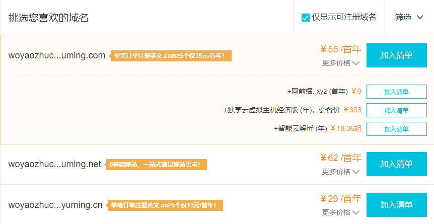

大家好~，我今天给大家分享一下，我个人博客的搭建过程。
废话不多说，大家如果有疑问，QQ:806267856询问。
想要建立一个属于自己的个人网站，有两样东西必不可少：域名，空间，接下来给大家讲讲域名和空间如何获取。
域名：
可以注册域名的地方有很多，阿里啊，腾讯啊，同时也有很多免费域名，我的第一个网站就是用的免费域名，有好处也有坏处。好处是：省钱，省钱，省钱。然后没了。坏处：算不上坏处，仁者见仁智者见智，基本上免费的域名都是二级域名甚至三级域名，有个自己的名字多好，谁愿意自己名字前面加上个前缀？建议大家域名还是买个好~毕竟现在域名都白菜价了，".com"的顶级域名也才50元左右一年。
我的域名选用的是万网的（现在已经被阿里收购了），直接域名查询输入你想要的域名，然后查域名。如果没被别人使用，ok，价格能接受，买下就好了。具体步骤如下：
点击我上面域名查询链接，或者自己登录阿里云，点击产品,找到域名与网站下的“域名注册”，进入万网查询域名。
比如图中输入"woyaozhuceyuming"后面选择".com"，点击查域名。会出现类似下图的界面

挑选域名，根据价格和喜好选一个自己喜欢的，然后买下就好啦。
也可以等腾讯云，阿里云搞活动，我的就是搞活动，9.9买的空间加域名，当然着急的话就没办法了，买吧。
空间：
空间一样，也有免费的空间，我觉得免费空间就是用在测试和学习上的，而且说实在的，测试的话，买个便宜的空间也足够用了。用起来还省心，毕竟免费空间的一大弱点就是你没给钱，你没给钱别人就不会给你服务，那服务器如果gg了，那你的东西也就gg了，心里多少也会不舒服的。
如果想要建立一个能长时间玩的，或长期使用的网站，就买个便宜点的服务器，买个域名，总共加起来几百块，赶上活动跟免费一样的。
空间我用的也是阿里云的，同样是活动领取，不过只有半年，半年到了再续费。云服务器购买。当然有人可能会注意到，你说的明明是云空间，怎么又变成云服务器了。这里我要给大家说明一下两者的区别，因为刚开始我也是因为这个搞得一头雾水。首先云服务器类似一台电脑，这个电脑在一个叫做阿里云的机房里面，你有这个电脑柜子的钥匙，你可以进入机房，开机，关机，清空，重启，随你便。云空间呢，相当于你和几个人一起有这个电脑的使用权，你可以在里面放东西，但是除了这些之外的你就不能做了。我是觉得云服务器要比云空间好，虽然让我走了很多个坑，但是这波不亏。
购买云服务器的步骤与域名类似，选择产品->云服务器ECS->立即购买，然后根据你所在的地区和你的需求选择参数，点击购买即可。基本上低配置的半年180。
有了服务器之后你就要根据说明，对云服务器的各种操作进行了解，这些都有说明文档，及其详细。
这时候你会想：“服务器有了，域名也有了，难道就可以访问了？这么简单？我怎么不信！”没错，不信就对了，这时候我们的国家都不知道你这个域名下的网站内容是否合法，万一不合法怎么办，所以呢，就要有最重要的一环，申请备案。
备案申请：
选择阿里云有几个让我感觉很舒服的点，在我备案申请的过程中，有多次来电，态度很好，备案完成之后，会根据你的备案时长，做出相应的时间延长，顺口一说，继续正题，假设服务器和域名你都有了，进入阿里云主页，登录你的账号，右上角会有个备案标题，点进去进入备案系统，剩下的跟着提示操作应该没问题。现在已经不需要邮寄资料了，方便了很多。
备案时间完全看自己，最后一环等待管局时间最长，只要不是有什么特殊情况，半月左右就OK了。
域名解析：
这时候应该还无法用自己的域名去访问自己的服务器，还需要比较关键的一步：域名解析。同样阿里云有教程。
这时候你的域名访问就不会被拒绝了，就是说，你只要在你的服务器上部署了网站，那么整个访问过程就是没问题的。